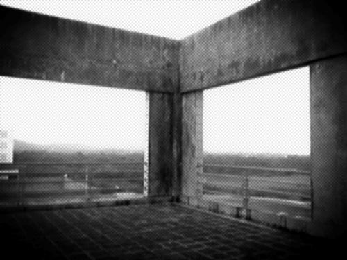

落寞
4/15/2006 6:59:02 AM

近期比较少拍照片，因为忙。
这一贴的几张是在教学楼偶而拍得，总觉得空荡荡的感觉形如我被镂空的心。
真的永远也填不满了，正如以往的她和我说的，黑洞的感觉。
我想我是一定要等到天亮才感想这些问题。
黑漆漆中，我终于找到了我害怕的东西。
她的名字叫做落寞。
我不再是那勇猛的狮子王，也许因为那几年，我曾拥有了本不该拥有的幸福。


近期比较少拍照片，因为忙。
这一贴的几张是在教学楼偶而拍得，总觉得空荡荡的感觉形如我被镂空的心。
真的永远也填不满了，正如以往的她和我说的，黑洞的感觉。
我想我是一定要等到天亮才感想这些问题。
黑漆漆中，我终于找到了我害怕的东西。
她的名字叫做落寞。
我不再是那勇猛的狮子王，也许因为那几年，我曾拥有了本不该拥有的幸福。
Comments
Leask Huang - 4/22/2006 6:45:53 PM
我已经发几次了哦.
Xiao Yue - 4/21/2006 4:03:26 PM